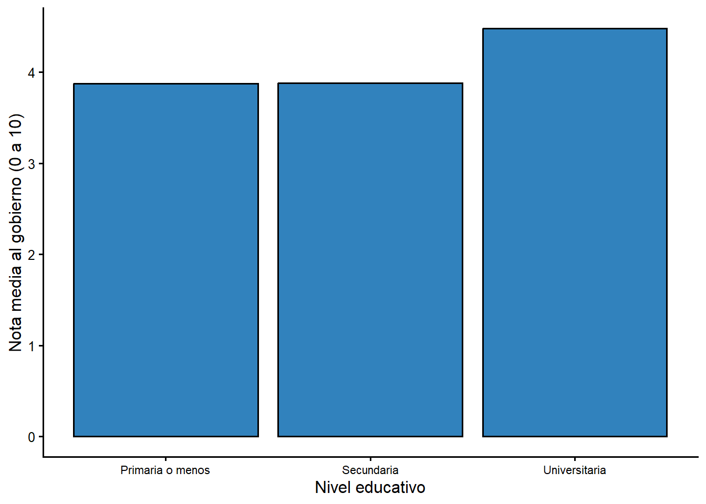

Capitulo 7 Analisis de varianza (prueba F): ANOVA
La prueba t compara las medias de dos grupos. ¿Que hacemos cuando queremos comparar tres o mas grupos? Si compararamos cada par de grupos con pruebas t separadas, cometeriamos mas errores de tipo I (cada prueba agrega una oportunidad de rechazar \(H_0\) por azar). El analisis de varianza (ANOVA) resuelve el problema con una sola prueba global basada en la razon F. Este capitulo sigue el material del curso CP-2007 ((Gomez Campos 2025)) y de (Levin 1999).
7.1 La idea detras del ANOVA
El ANOVA trata la variacion total de un conjunto de puntajes como si se pudiera dividir en dos componentes:
- la variacion dentro de los grupos: la distancia entre cada puntaje y la media de su propio grupo; y
- la variacion entre los grupos: la distancia entre las medias de los grupos.
La razon F compara ambos componentes:
\[F=\frac{\text{variacion entre grupos}}{\text{variacion dentro de los grupos}}\]
Cuanto mayor sea la variacion entre los grupos en relacion con la variacion dentro de ellos, mayor sera la razon F y mayor la probabilidad de rechazar la hipotesis nula. La hipotesis nula del ANOVA es que todas las medias poblacionales de los grupos son iguales.
7.2 Procedimiento manual en catorce pasos
Para ilustrar el procedimiento usamos el ejemplo clasico de Levin ((Levin 1999)): ¿varia el coeficiente intelectual (C.I.) segun la clase social? Se comparan tres grupos (alta, media y baja), con cinco observaciones cada uno.
datos <- data.frame(
Alta = c(130, 125, 130, 120, 122),
Media = c(120, 115, 115, 110, 112),
Baja = c(110, 100, 90, 100, 85)
)
datos
Alta Media Baja
1 130 120 110
2 125 115 100
3 130 115 90
4 120 110 100
5 122 112 85Las hipotesis son:
- \(H_0\): las clases alta, media y baja no difieren en su coeficiente intelectual.
- \(H_1\): las clases alta, media y baja difieren en su coeficiente intelectual.
Los pasos 1 a 9 calculan la razon F; los pasos 10 a 14 la interpretan y localizan las diferencias.
# Paso 1: media de cada grupo
prom_alta <- mean(datos$Alta)
prom_media <- mean(datos$Media)
prom_baja <- mean(datos$Baja)
# Tamano total y por grupo
N_total <- nrow(datos) * ncol(datos)
N <- nrow(datos)
k <- ncol(datos)
# Paso 2: suma total de cuadrados
SC_total <- sum(datos^2) - (sum(datos))^2 / N_total
# Paso 3: suma de cuadrados entre grupos
SC_entre <- (sum(datos$Alta)^2 / N + sum(datos$Media)^2 / N +
sum(datos$Baja)^2 / N) - (sum(datos))^2 / N_total
# Paso 4: suma de cuadrados dentro de los grupos
SC_dentro <- SC_total - SC_entre
# Pasos 5 y 6: grados de libertad
gl_entre <- k - 1
gl_dentro <- N_total - k
# Pasos 7 y 8: medias cuadraticas
MC_entre <- SC_entre / gl_entre
MC_dentro <- SC_dentro / gl_dentro
# Paso 9: razon F experimental
F_exp <- MC_entre / MC_dentro
c(prom_alta = prom_alta, prom_media = prom_media, prom_baja = prom_baja,
SC_total = SC_total, SC_entre = SC_entre, SC_dentro = SC_dentro,
F_exp = F_exp)
prom_alta prom_media prom_baja SC_total SC_entre SC_dentro
125.40000 114.40000 97.00000 2570.93333 2050.53333 520.40000
F_exp
23.64181 # Paso 10: valor critico de F (tabla F) para 0,05 con gl 2 y 12
F_teorica <- qf(0.95, gl_entre, gl_dentro)
c(F_experimental = F_exp, F_teorica = F_teorica,
gl_entre = gl_entre, gl_dentro = gl_dentro)
F_experimental F_teorica gl_entre gl_dentro
23.641814 3.885294 2.000000 12.000000 La F experimental (23,64) es mayor que la F teorica (3,89). Por lo tanto, rechazamos \(H_0\): si hay diferencias en el coeficiente intelectual segun la clase social. Ahora necesitamos saber entre cuales grupos estan esas diferencias.
# Paso 11: diferencias de medias entre todos los pares de grupos
Dif_AltaMedia <- abs(prom_alta - prom_media)
Dif_AltaBaja <- abs(prom_alta - prom_baja)
Dif_MediaBaja <- abs(prom_media - prom_baja)
# Paso 12: valor q-alpha (tabla del rango studentizado) para k = 3, gl = 12, 0,05
q_alpha <- qtukey(0.95, k, gl_dentro)
# Paso 13: Diferencia Significativa Honesta (DSH) de Tukey
DSH <- q_alpha * sqrt(MC_dentro / N)
c(q_alpha = q_alpha, DSH = DSH,
AltaMedia = Dif_AltaMedia, AltaBaja = Dif_AltaBaja, MediaBaja = Dif_MediaBaja)
q_alpha DSH AltaMedia AltaBaja MediaBaja
3.772929 11.111473 11.000000 28.400000 17.400000 Paso 14: comparar cada diferencia con la DSH.
- Alta vs. Media (11) es menor que la DSH (11,10): no hay diferencia significativa.
- Alta vs. Baja (28,4) es mayor que la DSH: si hay diferencia significativa.
- Media vs. Baja (17,4) es mayor que la DSH: si hay diferencia significativa.
El analisis confirma que hay diferencias en el coeficiente intelectual segun la clase social, pero solo entre la clase alta y la baja y entre la media y la baja. No hay diferencias significativas entre la clase alta y la media.
7.3 Comprobacion con las funciones de R
Para usar aov() necesitamos transformar los datos a formato largo (una
columna con la clase social y otra con el coeficiente intelectual), usando
pivot_longer().
library(tidyr)
df_tidy <- datos %>%
pivot_longer(everything(), names_to = "clase", values_to = "ci") %>%
mutate(clase = factor(clase, levels = c("Alta", "Media", "Baja")))
df_tidy
# A tibble: 15 × 2
clase ci
<fct> <dbl>
1 Alta 130
2 Media 120
3 Baja 110
4 Alta 125
5 Media 115
6 Baja 100
7 Alta 130
8 Media 115
9 Baja 90
10 Alta 120
11 Media 110
12 Baja 100
13 Alta 122
14 Media 112
15 Baja 85res_anova <- aov(ci ~ clase, data = df_tidy)
summary(res_anova)
Df Sum Sq Mean Sq F value Pr(>F)
clase 2 2050.5 1025.3 23.64 6.88e-05 ***
Residuals 12 520.4 43.4
---
Signif. codes: 0 '***' 0.001 '**' 0.01 '*' 0.05 '.' 0.1 ' ' 1La salida reproduce el procedimiento manual: Sum Sq son las sumas de cuadrados,
Mean Sq las medias cuadraticas, F value la razon F y Pr(>F) el valor p. Como
p = 6,88e-05 (mucho menor que 0,05), rechazamos \(H_0\).
# Prueba post hoc de Tukey: ¿que pares de grupos difieren?
TukeyHSD(res_anova)
Tukey multiple comparisons of means
95% family-wise confidence level
Fit: aov(formula = ci ~ clase, data = df_tidy)
$clase
diff lwr upr p adj
Media-Alta -11.0 -22.11147 0.1114733 0.0524062
Baja-Alta -28.4 -39.51147 -17.2885267 0.0000510
Baja-Media -17.4 -28.51147 -6.2885267 0.0033905La columna p adj muestra el valor p ajustado por comparaciones multiples. Las
diferencias Baja-Alta y Baja-Media son significativas (p < 0,05), mientras que
Media-Alta queda justo por encima del umbral (p = 0,052). Los resultados coinciden
con el procedimiento manual.
7.4 Aplicacion con la encuesta del CIEP
¿Depende la evaluacion del gobierno (nota_gob, de 0 a 10) del nivel educativo?
Comparamos los tres niveles educativos de la encuesta del CIEP.
ciep %>%
filter(!is.na(nota_gob), !is.na(educ_f)) %>%
group_by(`Nivel educativo` = educ_f) %>%
summarise(
n = n(),
Media = round(mean(as.numeric(nota_gob)), 2),
`Desv. est.` = round(sd(as.numeric(nota_gob)), 2),
.groups = "drop"
)
# A tibble: 3 × 4
`Nivel educativo` n Media `Desv. est.`
<ord> <int> <dbl> <dbl>
1 Primaria o menos 228 3.88 3.18
2 Secundaria 384 3.88 2.79
3 Universitaria 343 4.48 2.37res_ciep <- aov(as.numeric(nota_gob) ~ educ_f, data = ciep)
summary(res_ciep)
Df Sum Sq Mean Sq F value Pr(>F)
educ_f 2 79 39.44 5.214 0.00559 **
Residuals 952 7201 7.56
---
Signif. codes: 0 '***' 0.001 '**' 0.01 '*' 0.05 '.' 0.1 ' ' 1
14 observations deleted due to missingness
TukeyHSD(res_ciep)
Tukey multiple comparisons of means
95% family-wise confidence level
Fit: aov(formula = as.numeric(nota_gob) ~ educ_f, data = ciep)
$educ_f
diff lwr upr
Secundaria-Primaria o menos 0.003015351 -0.5367349 0.5427656
Universitaria-Primaria o menos 0.600941128 0.0493037 1.1525786
Universitaria-Secundaria 0.597925777 0.1182976 1.0775540
p adj
Secundaria-Primaria o menos 0.9999052
Universitaria-Primaria o menos 0.0288229
Universitaria-Secundaria 0.0098203La razon F es 5,21 con un valor p de 0,0056: hay diferencias significativas en la evaluacion del gobierno segun el nivel educativo. El analisis de Tukey muestra que la diferencia esta entre quienes tienen educacion universitaria y los otros dos grupos: las personas con formacion universitaria evaluan mejor al gobierno (4,48 en promedio) que quienes tienen primaria (3,88) o secundaria (3,89). Entre primaria y secundaria no hay diferencia significativa.
Figura 7.1 Evaluacion del gobierno por nivel educativo, encuesta CIEP 2020

Figura 7.1. Nota media al gobierno por nivel educativo, encuesta CIEP 2020
7.5 ANOVA frente a la prueba t
El ANOVA generaliza la prueba t a mas de dos grupos. De hecho, cuando hay solo dos grupos, el ANOVA y la prueba t dan la misma conclusion: la razon F es igual al cuadrado de la razon t. Usamos la prueba t para dos grupos porque es mas directa, y el ANOVA cuando hay tres o mas.
7.6 Resumen
- El ANOVA contrasta si las medias de tres o mas grupos son iguales.
- La razon F compara la variacion entre grupos con la variacion dentro de ellos.
- Si se rechaza \(H_0\), la prueba post hoc de Tukey (DSH) identifica que pares de grupos difieren.
- En R, el ANOVA se calcula con
aov()y las comparaciones multiples conTukeyHSD().